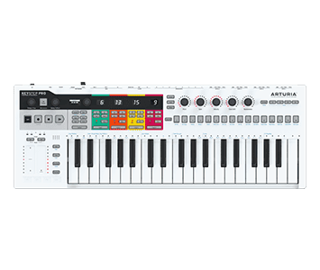
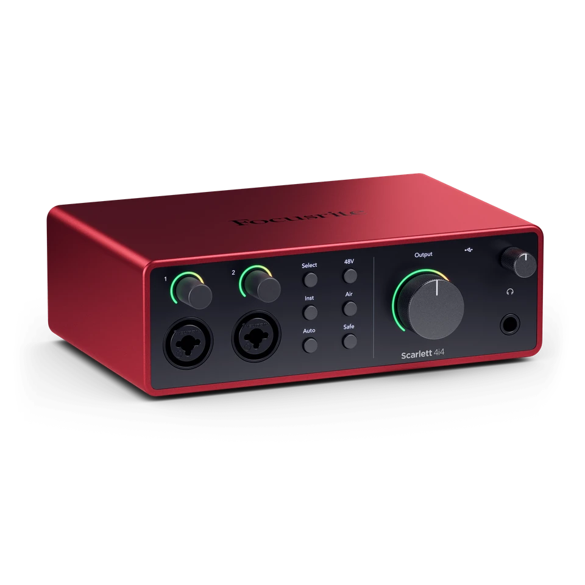
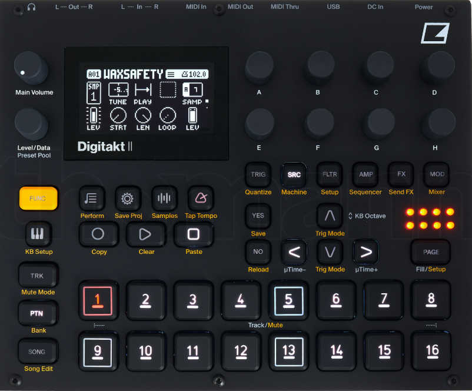
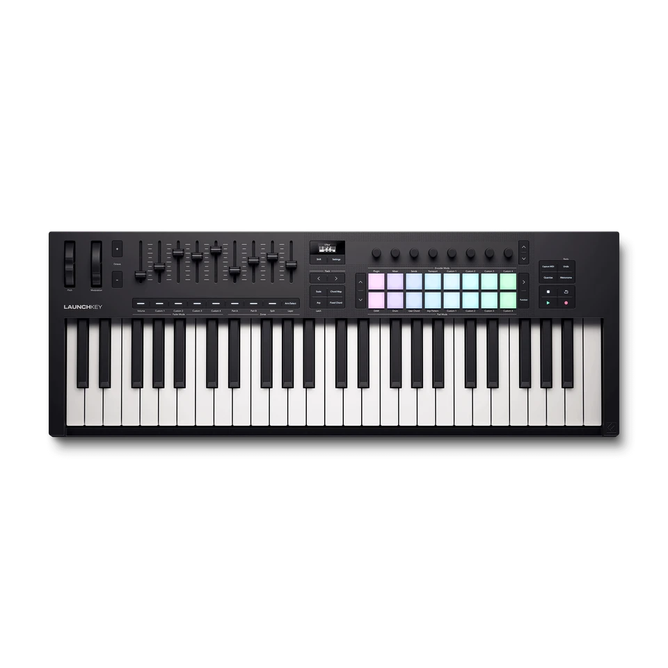
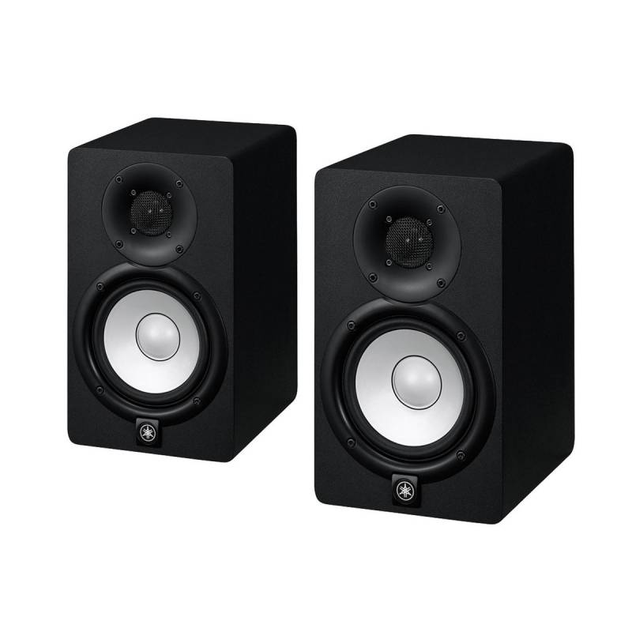
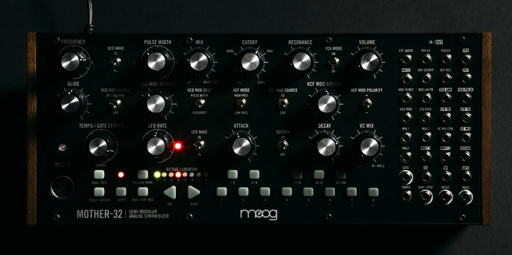
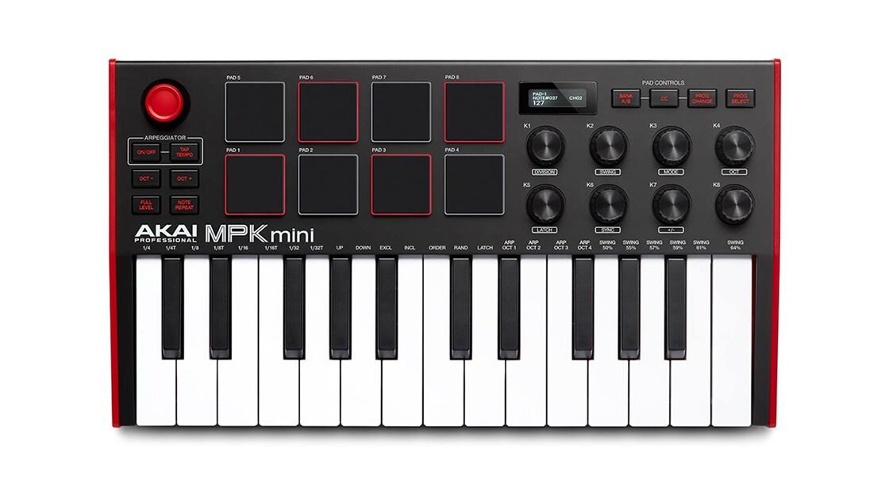
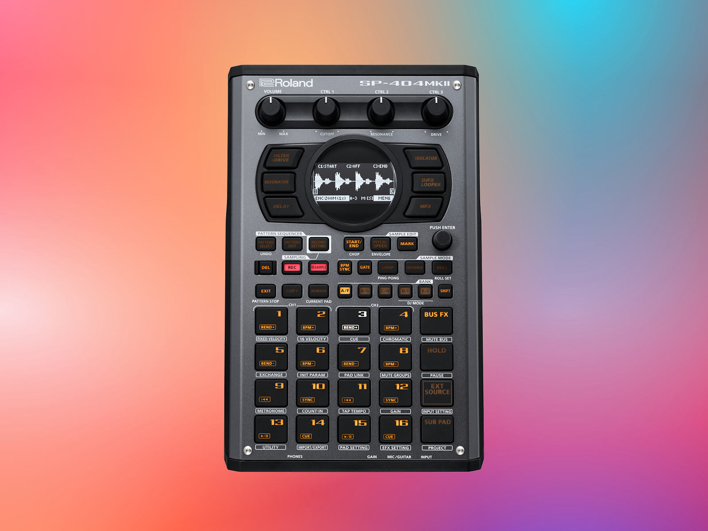
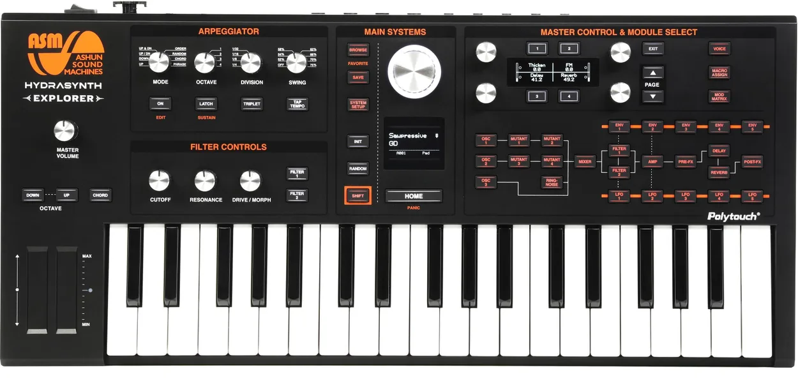

Sintetizador Polifónico Korg Minilogue XD
Sintetizadores
Sintetizador analógico híbrido de 4 voces con motor multiefectos digital y secuenciador de 16 pasos.
$649.00
Ver másExplora el sonido, crea tu música.
Explora nuestra selección de instrumentos digitales y equipos especializados en producción musical.
Sintetizadores
Sintetizador analógico híbrido de 4 voces con motor multiefectos digital y secuenciador de 16 pasos.
$649.00
Ver más
Controladores MIDI
Controlador MIDI y secuenciador polifónico de 4 pistas con control CV/Gate para sintetizadores modulares.
$549.00
Ver más
Equipos de producción
Interfaz de audio USB-C con 4 entradas/salidas, preamplificadores de bajo ruido y convertidores de estudio.
$339.99
Ver más
Equipo de producción
Máquina de ritmos y muestreador digital estéreo de 16 pistas con secuenciador de parámetros.
$899.00
Ver más.avif)
Controladores MIDI
Instrumento independiente con matriz de pads MPE sensible a la presión y procesador integrado.
$1,799.00
Ver más
Sintetizadores
Sintetizador digital de síntesis FM de 8 voces combinado con el secuenciador de Elektron.
$1,149.00
Ver más
Teclados digitales
Teclado controlador MIDI de 49 teclas con integración para Ableton Live, Logic Pro y FL Studio.
$289.99
Ver más
Equipo de producción
Monitores de estudio activos de campo cercano con woofer de 5 pulgadas para mezcla musical.
$740.00
Ver más
Sintetizadores
Sintetizador semi-modular analógico de formato Eurorack con secuenciador integrado de 32 pasos.
$699.00
Ver más
Controladores MIDI
Controlador compacto de 25 teclas con 8 pads de percusión estilo MPC iluminados.
$285.57
Ver más
Equipo de producción
Muestreador y procesador de efectos portátil con pantalla OLED y 17 pads sensibles a la velocidad.
$487.98
Ver más
Sintetizadores
Sintetizador digital de tabla de ondas de 8 voces con teclado de 37 teclas y Poly-AT.
$649.00
Ver más